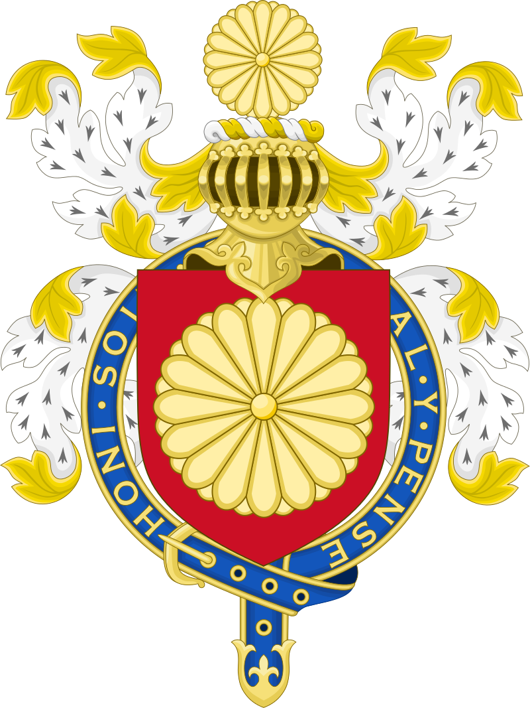

Seja Bem-Vindo!
História

Esse brasão específico pertence ao Imperador do Japão, que foi agraciado com essa honra. No centro, o brasão japonês (ou "mon") apresenta a flor de crisântemo de 16 pétalas, símbolo da família imperial japonesa. Em volta, está o emblema da Ordem da Jarreteira, com o lema "Honi soit qui mal y pense" (que significa "Envergonhe-se quem pensa mal disso" em francês medieval), que é o lema da ordem.
O Japão começou a ser habitado há cerca de 30.000 anos, com
comunidades que evoluíram para uma sociedade agrícola e a cultura Yayoi (c. 300 a.C. - 300
d.C.), conhecida pelo cultivo de arroz e o uso de metal. No século IV, surgiu o clã Yamato,
que unificou o Japão e deu início à linhagem imperial que persiste até hoje. O budismo
chegou ao Japão no século VI, influenciando profundamente a cultura e a política.
Nos séculos seguintes, o Japão passou por um período de poder descentralizado com os
samurais e o governo dos xoguns, especialmente com o Xogunato Kamakura (1185-1333) e o
Xogunato Tokugawa (1603-1868), que fechou o país para o comércio estrangeiro por mais de 200
anos.
Em 1868, a Restauração Meiji restaurou o poder imperial, modernizou o Japão e abriu suas
portas para o mundo, transformando o país em uma potência industrial e militar. No início do
século XX, o Japão expandiu seu império, ocupando partes da Ásia, mas foi derrotado na
Segunda Guerra Mundial em 1945 após os bombardeios atômicos em Hiroshima e Nagasaki.
Após a guerra, o Japão adotou uma nova constituição pacifista, com apoio dos Estados
Unidos, e se reconstruiu rapidamente, tornando-se uma potência econômica mundial. Hoje, o
Japão é conhecido por sua cultura rica e tecnologia avançada, mantendo uma monarquia
constitucional com o imperador como símbolo de unidade nacional.
Era Pré-Histórica (até 300 a.C.): A cultura Jomon é conhecida por suas cerâmicas decoradas e estilo de vida nômade. Durante este período, as pessoas praticavam a caça, pesca e coleta. As evidências arqueológicas revelam a presença de assentamentos e rituais, como túmulos e artefatos.
Era Yayoi (300 a.C. - 300 d.C.): A introdução do cultivo de arroz levou a um aumento populacional e ao surgimento de comunidades mais complexas. Influências da China e da Coreia são evidentes na metalurgia e na agricultura. O período marca a transição para uma sociedade mais estratificada.
Período Kofun (300 - 538): Caracterizado pela construção de grandes túmulos em forma de chave, conhecidos como kofun. A classe dominante começou a se consolidar, com o desenvolvimento de uma hierarquia social. Os primeiros registros escritos e influências externas começaram a moldar a cultura japonesa.
Período Asuka (538 - 710): O budismo foi oficialmente introduzido, influenciando a arte e a filosofia japonesa. Este período também viu o fortalecimento do governo central, com a codificação de leis e administração. A troca cultural com a China foi significativa, especialmente em arte e religião.
Período Nara (710 - 794): Nara tornou-se a primeira capital permanente, promovendo o desenvolvimento cultural e político. A criação do "Nihon Shoki", um dos primeiros registros históricos do Japão, ocorreu neste período. O budismo se consolidou, com a construção de templos monumentais.
Período Heian (794 - 1185): A corte de Kyoto floresceu, produzindo obras literárias como "Genji Monogatari", considerada a primeira novela do mundo. A estética japonesa se desenvolveu, com foco na natureza e na beleza efêmera. A aristocracia dominava a política, enquanto o povo comum permanecia relativamente isolado.
Período Kamakura (1185 - 1333): A ascensão do shogunato marcou a transição do poder da corte imperial para os líderes militares. O bushido, o código de conduta dos samurais, começou a se firmar. O período também foi caracterizado por invasões mongóis, que foram repelidas, aumentando a reputação dos samurais.
Período Muromachi (1336 - 1573): A era foi marcada por instabilidade política e guerras entre clãs rivais, além do surgimento do shogunato Ashikaga. A arte e a cultura prosperaram, com o desenvolvimento do teatro Noh e da pintura sumi-e. As influências do Zen budismo se tornaram evidentes na estética da época.
Período Sengoku (1467 - 1603): Conhecido como a Era dos Estados Guerreiro, foi um período de intensa guerra civil e fragmentação política. Clãs como os Oda, Toyotomi e Tokugawa lutaram pelo controle do Japão. A unificação sob Tokugawa Ieyasu no final desse período preparou o terreno para a era Edo.
Período Edo (1603 - 1868): O shogunato Tokugawa trouxe estabilidade e paz, com um sistema de governo centralizado. O comércio floresceu, e cidades como Edo (atual Tóquio) cresceram rapidamente. A cultura urbana se desenvolveu, com o surgimento de ukiyo-e (gravuras de paisagens) e teatro Kabuki.
Era Meiji (1868 - 1912): A Restauração Meiji modernizou o Japão, abolindo o feudalismo e estabelecendo um governo central forte. O país adotou tecnologias ocidentais, desenvolvendo indústria e infraestrutura. O Japão também começou a se expandir militarmente, adquirindo colônias e se tornando uma potência mundial.
Período Taisho (1912 - 1926): O Japão experimentou um breve período de democratização e efervescência cultural. A economia cresceu, mas a instabilidade política levou ao surgimento de movimentos extremistas. O nacionalismo começou a se intensificar, preparando o terreno para futuras crises.
Era Showa (1926 - 1989): O período incluiu a militarização, a participação do Japão na Segunda Guerra Mundial e a devastação resultante. Após a guerra, o Japão se reergueu economicamente, tornando-se uma das maiores economias do mundo. As décadas finais viram uma democratização e crescente influência cultural global.
Era Heisei (1989 - 2019): O Japão enfrentou desafios econômicos, como a bolha imobiliária e o "período perdido". Desastres naturais, como o terremoto de Kobe e o tsunami de Fukushima, impactaram a sociedade. A era também foi marcada por avanços tecnológicos e uma crescente preocupação com questões ambientais.
Era Reiwa (2019 - presente):
Focada na inovação e na sustentabilidade, esta era busca enfrentar desafios globais,
como
mudanças climáticas e pandemias. O Japão continua a ser uma potência econômica, com
ênfase
em tecnologia e cultura pop. A sociedade também enfrenta questões demográficas, como o
envelhecimento da população.